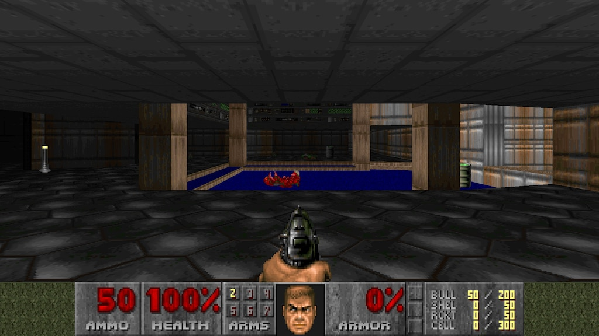
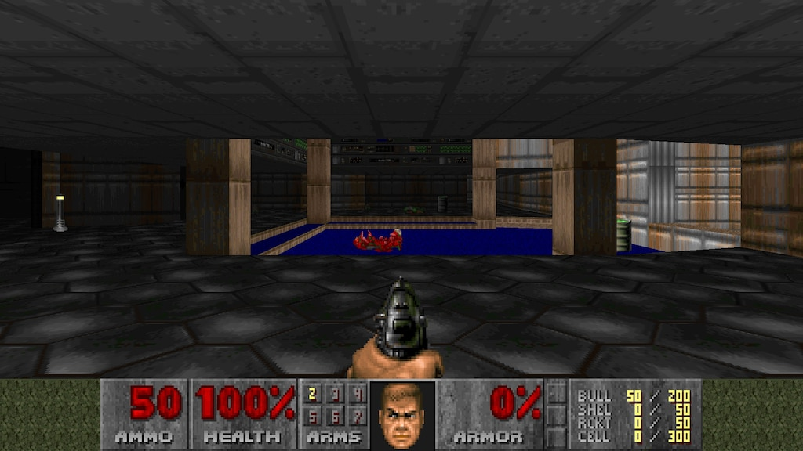

DOOM (1993) Analysis
Look and listen:
- 3D first-person shooter perspective creates immersion
- Relatively simple sprite-based graphics, but effective at depicting hellish environments
- Pixelated textures, limited color palette, but distinctive atmosphere
- Sound effects (grunts, gunshots, doors) add to intensity
- No voice acting, story conveyed through text screens between levels
Settings:
- Takes place on Mars moons Phobos and Deimos, later Hell itself
- Mainly indoor, claustrophobic environments like military bases, labs, etc.
- Some outdoor areas on Phobos/Deimos with mountains, canyons
- Settings get more surreal and hellish as game progresses
- Semi-nonlinear levels encourage exploration to find keys, secrets
Characters:
- Play as unnamed space marine, the "Doomguy"
- No real character development, meant to be player avatar
- Only learn bits of backstory from manual and ending text
- No real interaction with other characters, only enemies
Challenges:
- Mainly combat challenges - fighting off waves of demons
- Have to manage health, ammo, know when to fight or flee
- Mazes and keyhunting also provide exploration/navigation challenges
- Secrets encourage thorough exploration of levels
- Some light puzzle-solving (finding keys, unlocking doors in right order)
Objects:
- Weapons (pistol, shotgun, chaingun, rockets, plasma, BFG)
- Ammo pickups scattered through levels
- Medikits and armor bonuses to restore health
- Keycards of different colors used to progress through locked doors
- Power-ups (berserk, invisibility, etc.) give temporary combat boosts
Music/Sound:
- Iconic heavy metal MIDI soundtrack gets blood pumping
- Composer Bobby Prince drew from metal and ambient music
- Sound effects are low-fi but impactful - monster noises, weapons, etc.
- No voice acting, but grunts and screams convey damage
Meta/Self-Reference:
- Not much meta commentary, plays things straight
- Difficulty levels (e.g. "I'm Too Young To Die") are a bit tongue-in-cheek
- Some humorous messages left by former humans (e.g. "the cake is a lie")
- References classic B-movie tropes but doesn't really comment on itself as a game
Cultural commentary:
- Taps into public fascination/fears around space, aliens, hell
- Demons as antagonists reflects Satanic panic of the era
- Over-the-top violence sparked controversies around video game content
- But also pioneered the FPS genre and 3D action games in general
Future Development:
- Improved graphics (higher res, 3D models vs sprites)
- More open, expansive levels
- Introduce more storytelling, worldbuilding and characterization
- Multiplayer (later added in DOOM II and successors)
- Expand arsenal, include upgrades/modifications to weapons
- Add more enemy types and boss battles
- But core fast-paced combat gameplay still holds up well today